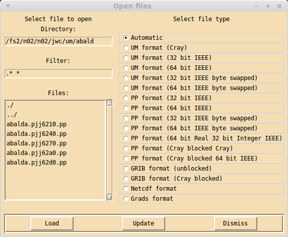

Open files window¶
Clicking on the Open button in the main xconv window brings up the Open files window.
On the left hand side are three boxes for selecting the files to be opened. The file list is generated by listing all files which match the given filter in the given directory. The initial directory is the one in which xconv was started, this may be edited directly or it will change when a directory is selected from the list of files. The initial filter matches all files (.* *), this may also be edited e.g. to *.nc if you wanted to list netCDF files only. If the directory name or filter is edited, the changes will take effect either when the return key is pressed in the entry box or when the Update button is clicked. There are two ways of selecting files, a single file or directory can be selected by double clicking with the left mouse button, alternatively a number of entries can be selected by highlighting them with the mouse and clicking on the Load button. Highlighting is performed as follows: clicking with the left mouse button will highlight that entry without changing any other highlighted entry, clicking with the middle mouse button will highlight that entry and all other entries will become unhighlighted, clicking with the right mouse button will highlight all entries between the current entry and the last entry to be highlighted, without changing any other highlighted entry.
On the right hand side is a list of the file type of the files xconv is opening. By default Automatic is selected, this means xconv will try and work out the file type of the file being opened. This will usually open all file types known to xconv, but if for some reason it cannot correctly identify the file type, the actual file type can be selected from the list.
There are three buttons in this window, Load loads into xconv the highlighted files, Update will update the file list e.g. if extra files have been created or files deleted since the window was opened, also Update will update the current directory and filter entries, Dismiss removes the Open files window.